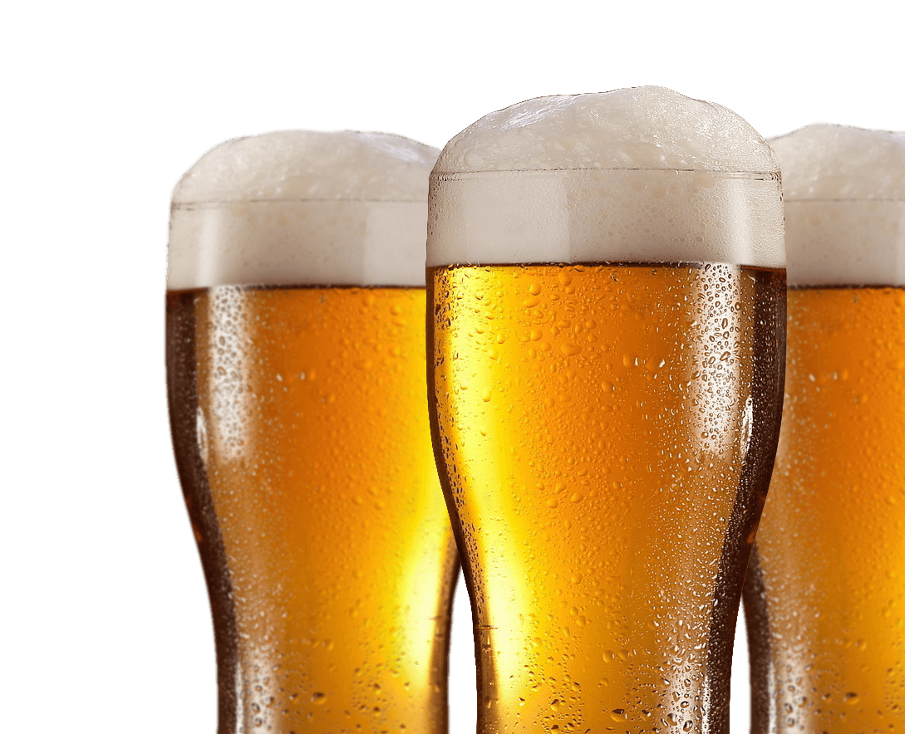

Virgin warbler
Virgin warbler

About us
At Virgin Warbler, we are passionate about the art of brewing, and we take pride in curating a diverse selection of beers that caters to every taste and preference. Whether you're a craft beer enthusiast, a seasoned beer connoisseur, or someone just beginning to explore the world of beer, you'll find something special here.
Why Choose Virgin Warbler?


1. Quality Assurance: We source our beers directly from renowned breweries, ensuring the highest quality and authenticity.
2. Expert Curation: Our team of experts selects beers based on flavor profiles, brewing techniques, and customer reviews, guaranteeing a memorable experience with every sip.
3. Convenience: With our user-friendly online platform, you can browse, select, and order your favorite beers from the comfort of your home. We deliver right to your doorstep, making the beer discovery process hassle-free.
4. Knowledgeable Support: Have questions or need recommendations? Our knowledgeable and friendly customer support team is always ready to assist you.